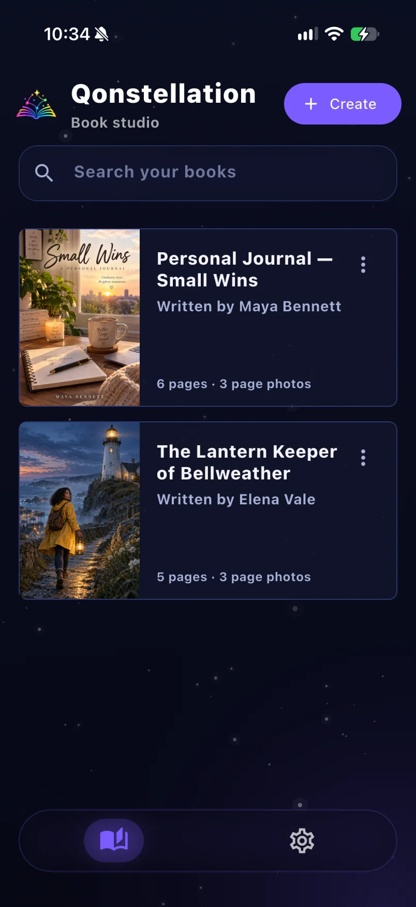
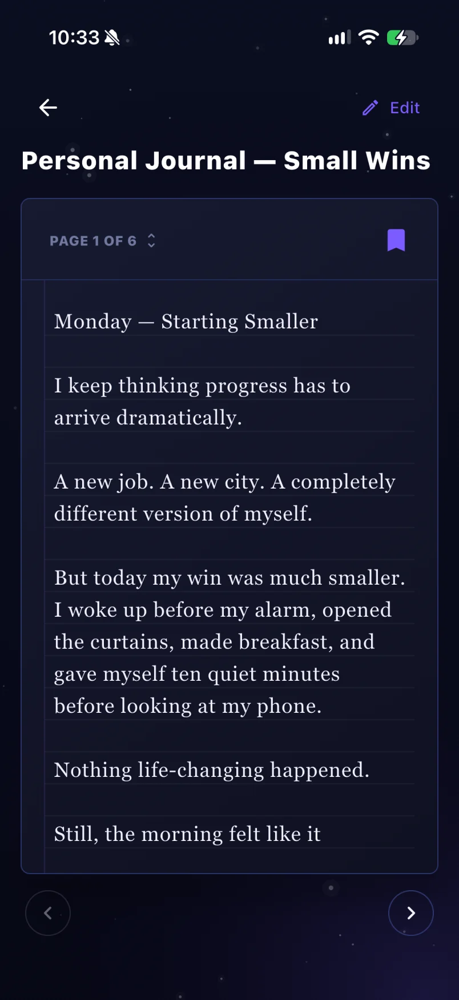
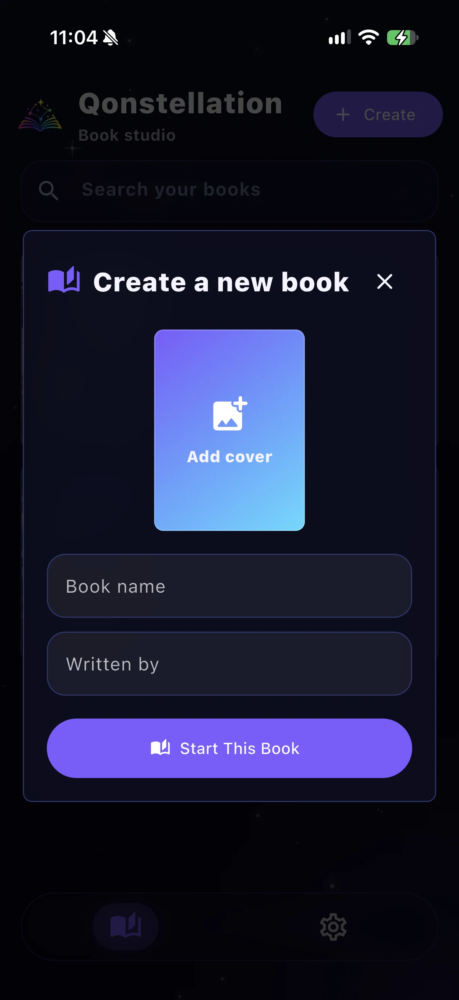

Recognize every project
Cover art, authorship, and page progress make the library easy to scan. Search by book title or author to find your work.
Write, arrange, and revisit books and visual stories in a private workspace that keeps your words, images, and creative projects together.


A focused home for personal stories, journals, novels, and photo-rich projects. Create a book, build its pages, and return to your work from your account.
Cover art, authorship, and page progress make the library easy to scan. Search by book title or author to find your work.
Create text, photo, or mixed pages. Reorder pages, jump to a page number, and bookmark your place while reading.

Add a cover, title, and author inside one creation flow. Cloud saving keeps your books connected to your signed-in account.
Every plan includes text, photo, and mixed pages, cloud saving, book preview, and eligible deleted-book recovery. Choose the space that fits your work.
250 MB
Total book-image storage
No paid subscription required.
3 GB
Total book-image storage
Monthly or yearly. See your store price in the app.
20 GB
Total book-image storage
Monthly or yearly. See your store price in the app.
Total space, not a monthly refill. Monthly and yearly billing have the same storage allowance. Storage does not reset each month. Covers and page images share your account's book-image allowance; page-image limits also apply separately to each book.
*Premium is not unlimited storage. There is no normal product-level cap on active books, but the 20 GB storage, 1,000-page, and 500-page-image limits still apply, along with technical and fair-use safeguards.
Limits checked against the current app on November 21, 2026. Available products, localized prices, billing periods, and purchase terms are shown in the app before checkout.
Use search, page navigation, reordering, and bookmarks to move between writing and reading.
Eligible books in Recently Deleted can be restored for up to 30 days, subject to your active-book allowance. Permanent deletion ends recovery.
Manage sign-in methods, notification preferences, subscriptions, support requests, and account deletion in Settings.
Your existing books remain available, but new image uploads pause when the allowance cannot accommodate them. Free space or change plans to resume uploads. A downgrade does not automatically delete your existing books.
Images in Recently Deleted still use storage until they are permanently removed. Usage can take time to update after file cleanup, and space may be temporarily reserved for uploads in progress.
Sign in to the same Qonstellation account to access its verified plan on supported devices. Different app accounts are not automatically combined, even when both belong to you.
Billing, cancellation, and refunds remain with the Apple or Google account used to subscribe. The app checks for an active subscription from the other store before a new checkout; cancel there and wait for it to expire before switching stores. These checks do not automatically cancel existing charges or purchases made outside the app.
Restore Purchases is available in the app. If an updated app reports another checkout in progress, finish or cancel it on the original device, or retry after the 15-minute reservation expires.
No. Qonstellation is a private book-creation workspace, not a publisher, public book marketplace, or printing service. The current app does not offer public feeds, dating, direct messaging, or social discovery.
Your books are not offered to other users through a public feed or marketplace. Private does not mean that content is never processed: cloud services store your work, and narrowly scoped automated writing-safety checks may flag serious signals for authorized human review.
Account identity and additional safety-case context have separate role and audit controls. Read the Privacy Policy and Terms of Use for analytics, safety-review, and retention details.
Press and hold a book in your library and choose Delete to move it to Recently Deleted. Open Settings > Recently Deleted to restore eligible books or permanently delete them. Legal or safety holds may prevent permanent removal.
For account deletion, open Settings > Delete Account or follow the account-deletion instructions. Deleting your account does not cancel a store subscription; cancel that separately in your store account.